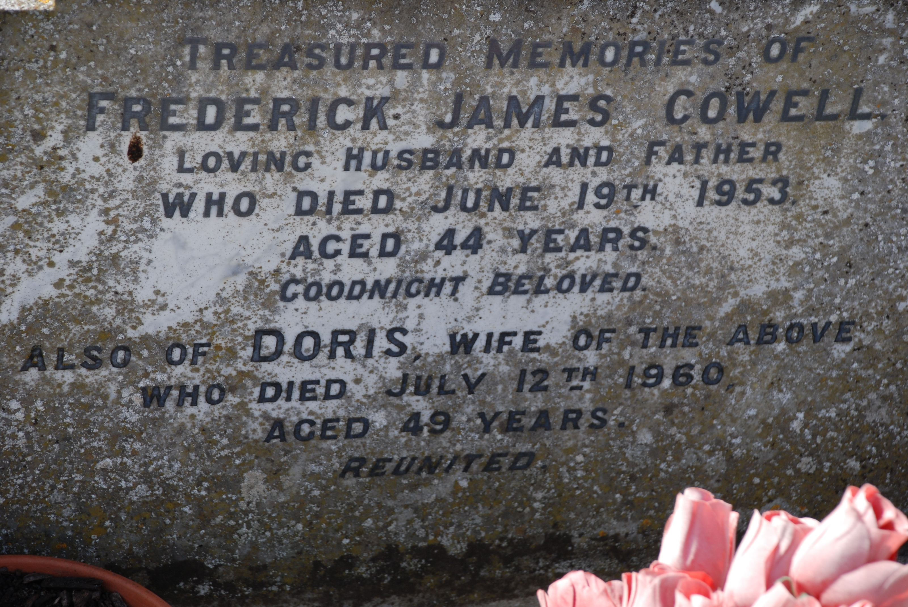
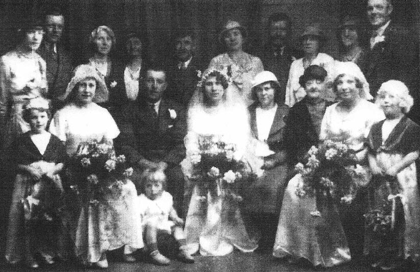
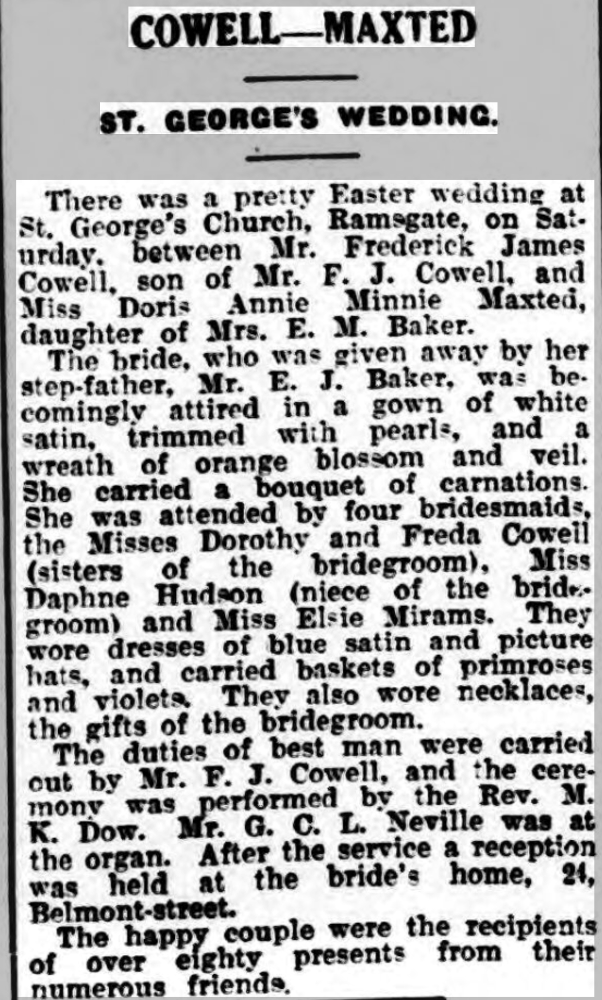
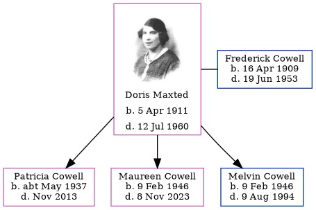

Doris Annie Minnie Cowell (née Maxted) 1911 - 1960
[ Home ] | [ Calendar ] | [ Surnames Index ] | [ Errors ] | [ Family History ]Doris Maxted, the wife of Frederick James Cowell (the uncle of Nigel Horne), was born in Ramsgate, Kent, England on 5 Apr 19111,2,3 and married Frederick (a lorry driver with whom she had 3 children: Patricia Mary, Maureen Joyce and Melvin James) at St George's Church in Ramsgate on 31 Mar 19346.
During her life, she was living at 5 Pouces Cottages, Manston, Kent, England on 29 Sept 19391; and at 20 Freeman's Road, Minster, Thanet, Kent in 1960.
She died on 12 Jul 1960 in Ramsgate3,4,5 and was buried on Minster Cemetery, Tothill Street, Minster, Thanet, Kent after 12 Jul 19603.
Children
- Patricia Mary was born c. May 1937
- Maureen Joyce was born on 9 Feb 1946
- Melvin James was born on 9 Feb 1946
Citations
- 1939 Register - Findmypast (was the wife of the head of the household)
- England & Wales, FreeBMD Birth Index, 1837-1915 Online publication - Provo, UT, USA: The Generations Network, Inc., 2006.Original data - General Register Office. England and Wales Civil Registration Indexes. London, England: General Register Office. © Crown copyright. Published by permission of the Cont
- UK and Ireland, Find A Grave Index, 1300s-Current Ancestry.com Operations, Inc.
- England & Wales Government Probate Death Index 1858-2019 - Findmypast
- England & Wales, Death Index: 1984-2005 Online publication - Provo, UT, USA: The Generations Network, Inc., 2007.Original data - General Register Office. England and Wales Civil Registration Indexes. London, England: General Register Office. © Crown copyright. Published by permission of the Cont
- England & Wales marriages 1837-2008 - Findmypast
Media
Dorris Maxted

Frederick Cowell - Doris Maxted - gravestone

Frederick James - Minnie Maxted - marriage

Thanet Advertiser 3 Apr 1934

England & Wales marriages 1837-2008 - BMD/M/1934/1/AZ/000615/094
England & Wales deaths 1837-2007 - BMD/D/1960/3/AZ/000190/031
England & Wales births 1837-2006 - BMD/B/1911/2/AZ/000914/058
1939 Register Transcription - TNA-R39-1820-1820G-008-36
England & Wales Government Probate Death Index 1858-2019 - GBOR/GOVPROBATE/C/1961-1961/00050726
Family Tree
Map
Generated by ged2site. Last updated on Jul 3, 2024
Known Issues
Residence record for 1960 contains no citation
Sep 29, 1939: not living at same address as spouse Frederick Cowell ('5 Pouces Cottages, Manston, Kent, England'/'5 Pouces Cottages, Minster, Thanet, Kent, England')
Frederick Cowell residence is very close probably should be recorded as the same address (' 5 Pouces Cottages, Minster, Thanet, Kent, England'/' 5 Pouces Cottages, Manston, Kent, England') in 1939
No records of living with anyone
Adding date of burial as 'aft 12 Jul 1960'